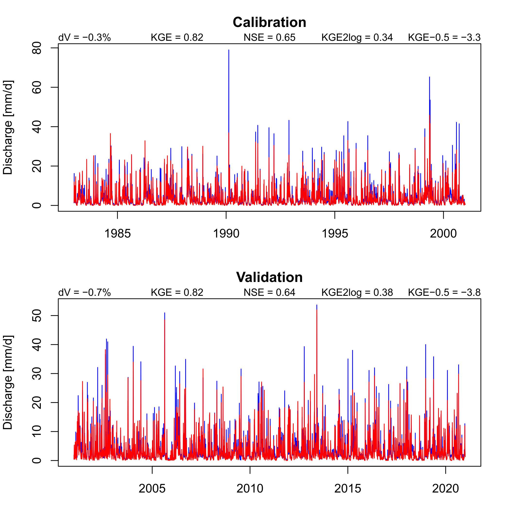
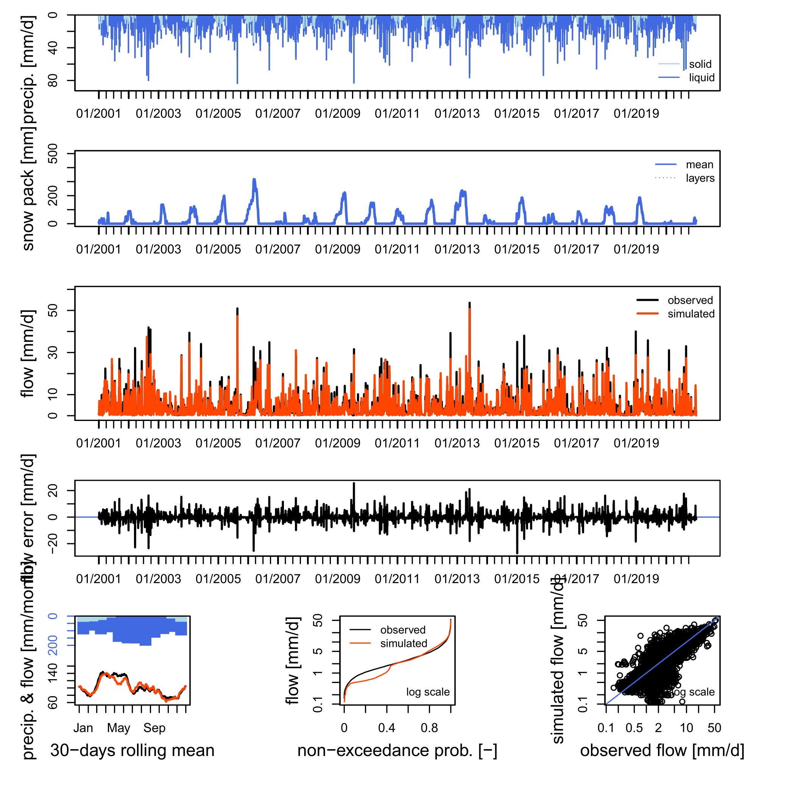

Calibration and validation
Michael Schirmer
2025-08-18
calibrate_validate.RmdThis vignette shows how to calibrate and validate a hydrological model
Preparations
Do vignette("run_model_minimalistic") for data
loading.
We now need additionally the hydroGOF package.
Note: the warning of deprecated packages can be ignored, openQUARREL is using only non-affected parts of hydroGOF.
library(hydroGOF)
#> Loading required package: zoo
#>
#> Attaching package: 'zoo'
#> The following objects are masked from 'package:base':
#>
#> as.Date, as.Date.numeric
#> The legacy packages maptools, rgdal, and rgeos, underpinning the sp package,
#> which was just loaded, will retire in October 2023.
#> Please refer to R-spatial evolution reports for details, especially
#> https://r-spatial.org/r/2023/05/15/evolution4.html.
#> It may be desirable to make the sf package available;
#> package maintainers should consider adding sf to Suggests:.
#> The sp package is now running under evolution status 2
#> (status 2 uses the sf package in place of rgdal)
#> Please note that 'maptools' will be retired during October 2023,
#> plan transition at your earliest convenience (see
#> https://r-spatial.org/r/2023/05/15/evolution4.html and earlier blogs
#> for guidance);some functionality will be moved to 'sp'.
#> Checking rgeos availability: FALSE… and observed streamflow (column Qmm) from the example data set.
minimum_input <- input_data %>%
filter(HSU_ID == "2303") %>%
select(DatesR, Qmm) %>%
inner_join(minimum_input, join_by(DatesR))Define periods for warm-up, calibration and validation:
# split data set
split_indices <- split_data_set(
minimum_input,
c("1981-01-01", "1982-12-31", # warm up
"1983-01-01", "2000-12-31", # calibration
"2001-01-01", "2020-12-31") # validation
)Calibration
Choose the calibration function, the error criterion and streamflow
transformation applied (here KGE and none
separated by a __), and whether you want to transform
parameters to a hypercube.
cal_fn <- "steepest_descent"
error_crit_transfo <- "KGE__none"
do_transfo_param <- TRUEPut basin information in a list. (todo: some redundancy with input, needs to be solved in future releases)
hydro_data <- list()
hydro_data$BasinObs <- minimum_input
# basin_data is an example data loaded with openQUARREL
minimum_basin_info <- basin_data[["2303"]]
# delete HypsoData not needed here
minimum_basin_info$HypsoData <- NULL
hydro_data$BasinInfo <- minimum_basin_infoCalibrate the model.
# calibrate the model
calibration_results <- calibrate_model(
hydro_data, split_indices, model, input,
cal_fn = cal_fn, do_transfo_param = do_transfo_param
) %>% suppressWarnings() %>% suppressMessages()
#> Random sampling with method steepest_descent finished in 1.252 secs with best value 0.75...Show calibration results:
Calibration finished in 30.348 sec with best criterion 0.8174634 with the model parameters:
# get the parameter names and print
names(calibration_results$model_param) <- names(default_cal_par[[model]]$lower)
print(calibration_results$model_param)
#> SCF DDF Tr Ts Tm LPrat FC
#> 1.4070571 1.0544192 1.0195454 -3.0000000 0.8793349 1.0000000 96.2456270
#> BETA k0 k1 k2 lsuz cperc bmax
#> 4.9803011 1.8442182 7.3266262 30.0000000 7.8986264 0.1002058 0.5881968
#> croute
#> 40.6331523There is more information after calibration,
calibration_results is a list of storing also the used
calibration settings cal_par and with
more_info the output of the chosen calibration
function.
str(calibration_results)
#> List of 12
#> $ model : chr "TUW"
#> $ snow_module : NULL
#> $ model_param : Named num [1:15] 1.407 1.054 1.02 -3 0.879 ...
#> ..- attr(*, "names")= chr [1:15] "SCF" "DDF" "Tr" "Ts" ...
#> $ preset_snow_parameters: logi FALSE
#> $ cal_fn : chr "steepest_descent"
#> $ error_crit_transfo : chr "KGE__none"
#> $ error_crit_val : num 0.817
#> $ cal_maximize : logi TRUE
#> $ do_transfo_param : logi TRUE
#> $ duration : 'difftime' num 30.348
#> ..- attr(*, "units")= chr "secs"
#> $ cal_par :List of 7
#> ..$ lower : Named num [1:15] 0.9 0 1 -3 -2 0 0 0 0 2 ...
#> .. ..- attr(*, "names")= chr [1:15] "SCF" "DDF" "Tr" "Ts" ...
#> ..$ upper : Named num [1:15] 1.5 5 3 1 2 1 600 20 2 30 ...
#> .. ..- attr(*, "names")= chr [1:15] "SCF" "DDF" "Tr" "Ts" ...
#> ..$ nof_param : int 15
#> ..$ has_snow_module: logi TRUE
#> ..$ DEoptim :List of 2
#> .. ..$ NP : num 300
#> .. ..$ itermax: num 200
#> ..$ malschains :List of 1
#> .. ..$ maxEvals: num 2000
#> ..$ hydroPSO :List of 1
#> .. ..$ control:List of 5
#> .. .. ..$ write2disk: logi FALSE
#> .. .. ..$ verbose : logi FALSE
#> .. .. ..$ npart : num 80
#> .. .. ..$ maxit : num 50
#> .. .. ..$ reltol : num 1e-10
#> $ more_info :List of 8
#> ..$ ParamFinalR : num [1:15] 0.8451 0.21088 0.00977 0 0.71983 ...
#> ..$ CritFinal : num -0.817
#> ..$ NIter : num 137
#> ..$ NRuns : num 3481
#> ..$ HistParamR : num [1:137, 1:15] 0.694 0.694 0.694 0.694 0.694 ...
#> .. ..- attr(*, "dimnames")=List of 2
#> .. .. ..$ : NULL
#> .. .. ..$ : chr [1:15] "Param1" "Param2" "Param3" "Param4" ...
#> ..$ HistCrit : num [1:137, 1] -0.747 -0.775 -0.777 -0.784 -0.786 ...
#> ..$ CritName : chr "KGE_none"
#> ..$ CritBestValue: NULLSimulate model, similar to
vignette("include_snow_module"), but now applying the
calibrated parameters.
# simulate snow, if an external snow module is needed (not here, but when you change it)
# todo: this update process can be put in one function
if (exists("snow_module")) {
if (!is.null(snow_module)) {
# create input
snow_input <- create_input(snow_module, minimum_input, list()) %>%
suppressWarnings() %>% suppressMessages()
# simulate snow
snow_module_results <- simulate_snow(snow_module, snow_param, snow_input) %>%
suppressWarnings() %>% suppressMessages()
# update precip
input$P <- snow_module_results$surface_water_runoff
}
}
# run model
# Note: we put Qobs as input to have it available for airGR plots
sim <- simulate_model(model, calibration_results$model_param, input, Qobs = hydro_data$BasinObs$Qmm)
# merge snow module results with hydro model results
if (exists("snow_module_results")) {
sim <- merge_snow_runoff_sim(sim, snow_module_results)
}Validation
Plots
For validation there are two plots available which can be right now only only saved to disc as pdf (which will be changed in a future release).
The first is a simple plot showing simulated and observed streamflow with some indicators for both the calibration and validation period, simulated streamflow is red.
# define and create a output folder
output_folder <- "output"
dir.create(output_folder)
save_cal_val_plot(file.path(output_folder, "cal_val_plot.pdf"), hydro_data$BasinObs, sim$Qsim, split_indices)
The second plot is the great airGR::plot adapted to models from other packages. We plot it for the calibration and validation period separately.
# airGR plots for validation and calibration time period
# calibration period
save_airGR_plot(file.path(output_folder, "airGR_cal.pdf"), model, sim, split_indices$ind_cal, hydro_data) %>%
suppressWarnings() %>% suppressMessages()
# validation period
save_airGR_plot(file.path(output_folder, "airGR_val.pdf"), model, sim, split_indices$ind_val, hydro_data) %>%
suppressWarnings() %>% suppressMessages()Here is the validation plot shown:

It seems that this model has difficulties in spring with snow melt,
quite probably because of a missing snow covered fraction
parameterisation. Try this with the model CemaNeigeGR4J as
this snow module has such a parameterisation implemented.
Calculation of (sub)seasonal performance metrics
Define metrics with streamflow transformations, separated by
__. For example mae__power__-0.5 is the mean
absolute error calculated with hydroGOF::mae, and
using a power transformation with exponent -0.5.
Note: All these (and other) string combinations can
also be used for calibration with applying it to
error_crit_transfo.
# validation settings
val_crit_transfo <- c("KGE__none", "NSE__none", "VE__none", "pbias__none", "mae__none", "mse__none",
"KGE__power__0.2", "NSE__power__0.2", "mae__power__0.2", "mse__power__0.2",
"KGE__boxcoxsantos", "NSE__boxcoxsantos", "mae__boxcoxsantos", "mse__boxcoxsantos",
"KGEtang__log", "NSE__log", "mae__log", "mse__log",
"KGE__power__-0.5", "NSE__power__-0.5", "mae__power__-0.5", "mse__power__-0.5")Define the subseasons for which the above defined metrics are calculated for:
# a list with names and arrays of two digits describing months used to calculate
# subseasonal validation metrics
val_subseason <- list(spring = c("02", "03", "04", "05"),
summer = c("06", "07", "08", "09"))Calculate (sub)seasonal metrics. It will automatically calculate performance metrics for the whole year (all).
# calculate performance metrics for calibration period
perf_cal <- calc_subseasonal_validation_results(val_subseason, hydro_data$BasinObs$DatesR,
split_indices$ind_cal, "calibration",
col_name = "period",
sim$Qsim, hydro_data$BasinObs$Qmm, val_crit_transfo
)
# calculate performance metrics for calibration period
perf_val <- calc_subseasonal_validation_results(val_subseason, hydro_data$BasinObs$DatesR,
split_indices$ind_val, "validation",
col_name = "period",
sim$Qsim, hydro_data$BasinObs$Qmm, val_crit_transfo
)
# combine periods in one data frame
perf_df <- dplyr::bind_rows(perf_cal, perf_val)Show the results which is a tibble. Lambda is the exponent if a power transformation is used …
| crit | transfo | lambda | value | season | period |
|---|---|---|---|---|---|
| KGE | none | NA | 0.7949142 | spring | calibration |
| NSE | none | NA | 0.6070238 | spring | calibration |
| VE | none | NA | 0.5679629 | spring | calibration |
| pbias | none | NA | 3.0000000 | spring | calibration |
| mae | none | NA | 1.9525378 | spring | calibration |
| mse | none | NA | 9.9717706 | spring | calibration |
This result can be stored as ascii file:
# write ascii results overview
write_ascii(
file.path(output_folder, "perf_ascii.txt"),
# to include also the parameters
calibration_results,
perf_df
)All results can be stored as a binary
# for this split sim in calibration and validation periods
sim_list <- list()
sim_list$cal <- subset_simulations(split_indices$ind_cal, sim)
sim_list$val <- subset_simulations(split_indices$ind_val, sim)
saveRDS(
list(
calibration = calibration_results,
simulation_val = sim_list$val,
simulation_cal = sim_list$cal,
sim_more_info = sim_list$more_info,
validation = validation_results
),
file.path(output_folder, "results_binary.rds")
)Next steps
Choose a different model, or a snow module/hydrological model
combination, or a different calibration function (see
vignette("calibration_methods_overview") for a complete
list), or a different streamflow transformation for calibration
(e.g. error_crit_transfo <- "NSE__power__0.2") or do it
in a different subbasin with filtering the example data to a different
HSU_ID.